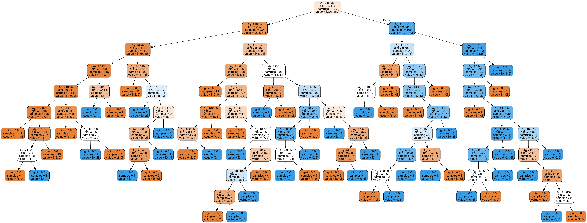
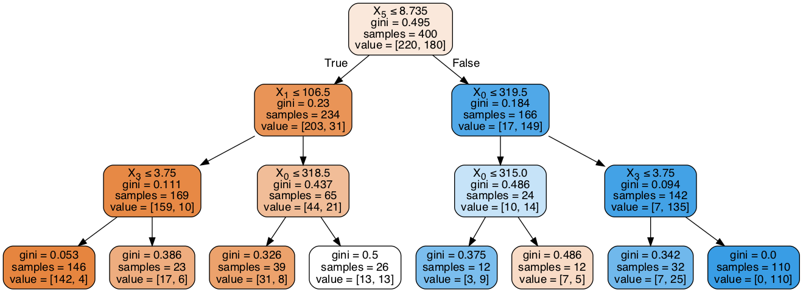
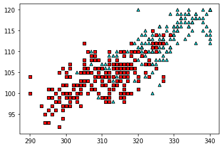
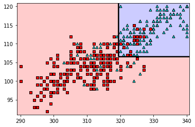
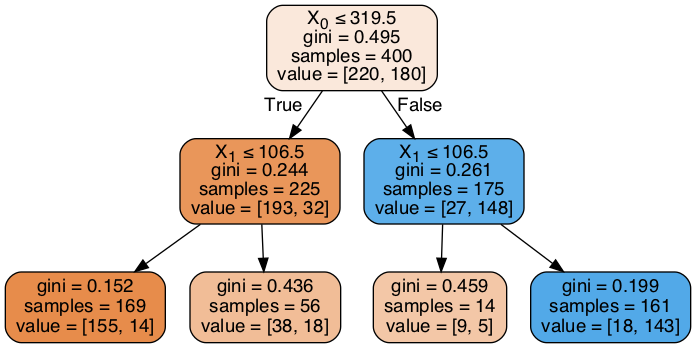
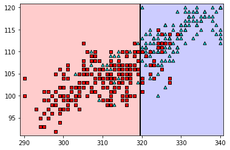
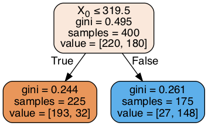
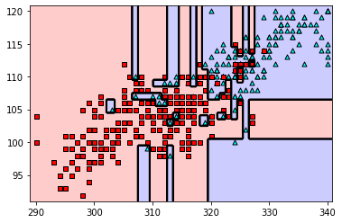
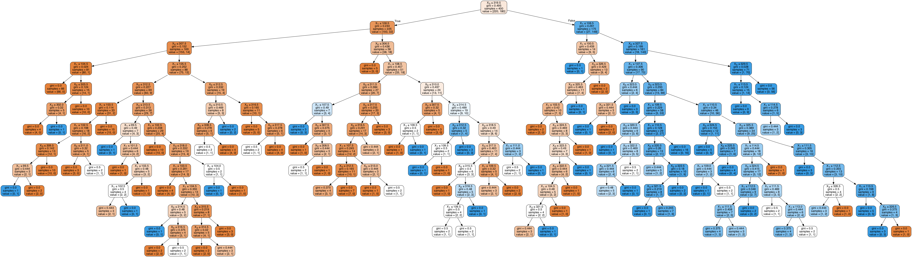

import pandas as pd
import numpy as np
from sklearn.tree import DecisionTreeClassifier
import utils
np.random.seed(0)
The dataset#
data = pd.read_csv('Admission_Predict.csv', index_col=0)
data
| GRE Score | TOEFL Score | University Rating | SOP | LOR | CGPA | Research | Chance of Admit | |
|---|---|---|---|---|---|---|---|---|
| Serial No. | ||||||||
| 1 | 337 | 118 | 4 | 4.5 | 4.5 | 9.65 | 1 | 0.92 |
| 2 | 324 | 107 | 4 | 4.0 | 4.5 | 8.87 | 1 | 0.76 |
| 3 | 316 | 104 | 3 | 3.0 | 3.5 | 8.00 | 1 | 0.72 |
| 4 | 322 | 110 | 3 | 3.5 | 2.5 | 8.67 | 1 | 0.80 |
| 5 | 314 | 103 | 2 | 2.0 | 3.0 | 8.21 | 0 | 0.65 |
| ... | ... | ... | ... | ... | ... | ... | ... | ... |
| 396 | 324 | 110 | 3 | 3.5 | 3.5 | 9.04 | 1 | 0.82 |
| 397 | 325 | 107 | 3 | 3.0 | 3.5 | 9.11 | 1 | 0.84 |
| 398 | 330 | 116 | 4 | 5.0 | 4.5 | 9.45 | 1 | 0.91 |
| 399 | 312 | 103 | 3 | 3.5 | 4.0 | 8.78 | 0 | 0.67 |
| 400 | 333 | 117 | 4 | 5.0 | 4.0 | 9.66 | 1 | 0.95 |
400 rows × 8 columns
data['Admitted'] = data['Chance of Admit'] >= 0.75
data = data.drop(['Chance of Admit'], axis=1)
data
| GRE Score | TOEFL Score | University Rating | SOP | LOR | CGPA | Research | Admitted | |
|---|---|---|---|---|---|---|---|---|
| Serial No. | ||||||||
| 1 | 337 | 118 | 4 | 4.5 | 4.5 | 9.65 | 1 | True |
| 2 | 324 | 107 | 4 | 4.0 | 4.5 | 8.87 | 1 | True |
| 3 | 316 | 104 | 3 | 3.0 | 3.5 | 8.00 | 1 | False |
| 4 | 322 | 110 | 3 | 3.5 | 2.5 | 8.67 | 1 | True |
| 5 | 314 | 103 | 2 | 2.0 | 3.0 | 8.21 | 0 | False |
| ... | ... | ... | ... | ... | ... | ... | ... | ... |
| 396 | 324 | 110 | 3 | 3.5 | 3.5 | 9.04 | 1 | True |
| 397 | 325 | 107 | 3 | 3.0 | 3.5 | 9.11 | 1 | True |
| 398 | 330 | 116 | 4 | 5.0 | 4.5 | 9.45 | 1 | True |
| 399 | 312 | 103 | 3 | 3.5 | 4.0 | 8.78 | 0 | False |
| 400 | 333 | 117 | 4 | 5.0 | 4.0 | 9.66 | 1 | True |
400 rows × 8 columns
features = data.drop(['Admitted'], axis=1)
labels = data['Admitted']
features
| GRE Score | TOEFL Score | University Rating | SOP | LOR | CGPA | Research | |
|---|---|---|---|---|---|---|---|
| Serial No. | |||||||
| 1 | 337 | 118 | 4 | 4.5 | 4.5 | 9.65 | 1 |
| 2 | 324 | 107 | 4 | 4.0 | 4.5 | 8.87 | 1 |
| 3 | 316 | 104 | 3 | 3.0 | 3.5 | 8.00 | 1 |
| 4 | 322 | 110 | 3 | 3.5 | 2.5 | 8.67 | 1 |
| 5 | 314 | 103 | 2 | 2.0 | 3.0 | 8.21 | 0 |
| ... | ... | ... | ... | ... | ... | ... | ... |
| 396 | 324 | 110 | 3 | 3.5 | 3.5 | 9.04 | 1 |
| 397 | 325 | 107 | 3 | 3.0 | 3.5 | 9.11 | 1 |
| 398 | 330 | 116 | 4 | 5.0 | 4.5 | 9.45 | 1 |
| 399 | 312 | 103 | 3 | 3.5 | 4.0 | 8.78 | 0 |
| 400 | 333 | 117 | 4 | 5.0 | 4.0 | 9.66 | 1 |
400 rows × 7 columns
labels
Serial No.
1 True
2 True
3 False
4 True
5 False
...
396 True
397 True
398 True
399 False
400 True
Name: Admitted, Length: 400, dtype: bool
Training a decision tree#
dt = DecisionTreeClassifier()
dt.fit(features, labels)
DecisionTreeClassifier(ccp_alpha=0.0, class_weight=None, criterion='gini',
max_depth=None, max_features=None, max_leaf_nodes=None,
min_impurity_decrease=0.0, min_impurity_split=None,
min_samples_leaf=1, min_samples_split=2,
min_weight_fraction_leaf=0.0, presort='deprecated',
random_state=None, splitter='best')
dt.predict(features[0:5])
array([ True, True, False, True, False])
dt.score(features, labels)
1.0
utils.display_tree(dt)
/Users/luisserrano/anaconda3/lib/python3.7/site-packages/sklearn/externals/six.py:31: FutureWarning: The module is deprecated in version 0.21 and will be removed in version 0.23 since we've dropped support for Python 2.7. Please rely on the official version of six (https://pypi.org/project/six/).
"(https://pypi.org/project/six/).", FutureWarning)

Training a smaller tree that doesn’t overfit#
dt_smaller = DecisionTreeClassifier(max_depth=3, min_samples_leaf=10, min_samples_split=10)
dt_smaller.fit(features, labels)
DecisionTreeClassifier(ccp_alpha=0.0, class_weight=None, criterion='gini',
max_depth=3, max_features=None, max_leaf_nodes=None,
min_impurity_decrease=0.0, min_impurity_split=None,
min_samples_leaf=10, min_samples_split=10,
min_weight_fraction_leaf=0.0, presort='deprecated',
random_state=None, splitter='best')
dt_smaller.score(features, labels)
0.885
utils.display_tree(dt_smaller)

Using the tree to make predictions#
dt_smaller.predict([[320,
110,
3,
4.0,
3.5,
8.9,
0]])
array([ True])
# A node in the white (neutral) leaf gets a false prediction
dt_smaller.predict([[320,
110,
3,
4.0,
3.5,
8.0,
0]])
array([False])
Training a decision tree with only two features#
#exams = data[['GRE Score', 'CGPA']]
exams = data[['GRE Score', 'TOEFL Score']]
exams
| GRE Score | TOEFL Score | |
|---|---|---|
| Serial No. | ||
| 1 | 337 | 118 |
| 2 | 324 | 107 |
| 3 | 316 | 104 |
| 4 | 322 | 110 |
| 5 | 314 | 103 |
| ... | ... | ... |
| 396 | 324 | 110 |
| 397 | 325 | 107 |
| 398 | 330 | 116 |
| 399 | 312 | 103 |
| 400 | 333 | 117 |
400 rows × 2 columns
utils.plot_points(exams, labels, size_of_points=25)

Fitting a tree of depth 2#
#dt_exams = DecisionTreeClassifier(max_depth=2, min_samples_leaf=10, min_samples_split=10)
dt_exams = DecisionTreeClassifier(max_depth=2)
dt_exams.fit(exams, labels)
DecisionTreeClassifier(ccp_alpha=0.0, class_weight=None, criterion='gini',
max_depth=2, max_features=None, max_leaf_nodes=None,
min_impurity_decrease=0.0, min_impurity_split=None,
min_samples_leaf=1, min_samples_split=2,
min_weight_fraction_leaf=0.0, presort='deprecated',
random_state=None, splitter='best')
utils.plot_model(exams, labels, dt_exams, size_of_points=25)

utils.display_tree(dt_exams)

Fitting a tree of depth 1#
simpler_dt_exams = DecisionTreeClassifier(max_depth=1)
simpler_dt_exams.fit(exams, labels)
DecisionTreeClassifier(ccp_alpha=0.0, class_weight=None, criterion='gini',
max_depth=1, max_features=None, max_leaf_nodes=None,
min_impurity_decrease=0.0, min_impurity_split=None,
min_samples_leaf=1, min_samples_split=2,
min_weight_fraction_leaf=0.0, presort='deprecated',
random_state=None, splitter='best')
utils.plot_model(exams, labels, simpler_dt_exams, size_of_points=25)

utils.display_tree(simpler_dt_exams)

Fitting a tree of unbounded depth (overfitting)#
crazy_dt_exams = DecisionTreeClassifier()
crazy_dt_exams.fit(exams, labels)
DecisionTreeClassifier(ccp_alpha=0.0, class_weight=None, criterion='gini',
max_depth=None, max_features=None, max_leaf_nodes=None,
min_impurity_decrease=0.0, min_impurity_split=None,
min_samples_leaf=1, min_samples_split=2,
min_weight_fraction_leaf=0.0, presort='deprecated',
random_state=None, splitter='best')
utils.plot_model(exams, labels, crazy_dt_exams, size_of_points=25)

utils.display_tree(crazy_dt_exams)
